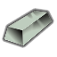
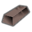

代钢级·电力工业·贫铀 DepletedUranium
代钢级家具建筑517防具140穿戴件37近战工具91远程武器7其它8共800件 价值28 质量0.50 护甲1.50/1.50/0.14 利钝1.10/1.60
Core_SK · def自带→电力工业(前期) · Things/Item/Ingot

代钢级·电力工业·纯铝（Al） AluminiumBar
代钢级家具建筑515防具140穿戴件37近战工具91远程武器7其它8共798件 价值1.8 质量0.22 护甲0.65/0.90/0.07 利钝0.60/0.40
Core_SK · def自带→电力工业(前期) · Things/Item/Ingot

强化工程级·电力工业·纯钛（Ti） Titanium
强化工程级家具建筑515防具140穿戴件37近战工具91远程武器7其它8共798件 价值8 质量0.30 护甲1/0.90/0.12 利钝1.10/1
Core_SK · def自带→电力工业(前期) · Things/Item/Ingot

塑料级·电力工业·纯铅（Pb） LeadBar
塑料级家具建筑374防具34穿戴件19近战工具42其它2共471件 价值6 质量0.40 护甲0.50/1.30/0.04 利钝0.30/1.30
Core_SK · def自带→电力工业(前期) · Things/Item/Ingot